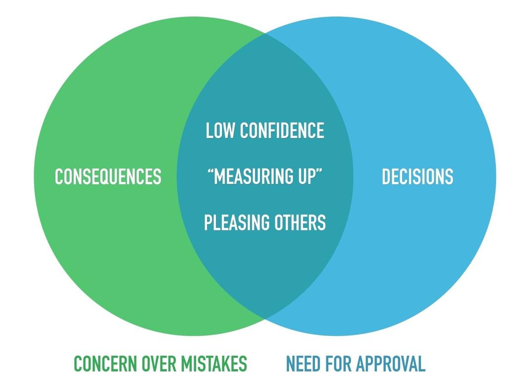

This may be my favorite tool in the entire book.
Decreasing your fear of making mistakes starts with a perspective shift. But this isn’t a matter of saying, “Choose to not fear the mistake.” That kind of vapid advice is not useful, because, were it so easy, we’d all have done it already. The binary mindset is as simple as that advice, but it’s also easy to implement. Mini Habits has proven that solutions need not be overly complex to bring great results.
This concept is the most exciting one I’ve come up with since mini habits, and it has had a profound positive impact on my life personally. Now that I’ve raised your expectations more than is wise, let’s delve into the binary mindset!
The Binary Mindset
Binary is the language of computers, and it consists of only two characters—0 and 1. The digital technology that dominates today is based in binary language.
TVs receive digital or analog signals (newer TVs and broadcasts are all digital now). A digital TV signal is essentially binary data that is transformed into an image. If a digital signal is weak, but the data still gets through, it’s a perfect picture. But if an analog signal is weak, the picture quality is too.
Digital/binary information is finite and defined information, while analog runs along a spectrum of practically infinite possibilities.
How does this relate to our behavior?
One problem people have with stopping perfectionism is that they like the idea of perfection. Perfection is extremely desirable, which is why perfectionists are going to love the binary mindset. This mindset will enable us to use our desire for perfection to beat this subset of perfectionism (not wanting to make mistakes). If we were to turn digital and analog TV signals into a metaphor for tasks, here’s what we’d get: Analog tasks can’t be done perfectly. Binary tasks and concepts can be done perfectly. For analog to be perfect, the signal must be perfect as well, but binary can be perfect even with a weak signal. Let me give you an example of each.
Common binary task: Imagine your task is to flip a switch to turn the light on in your room. If you do it, it’s done. It’s perfect. Even if you trip and hit your knee and fall, but still hit the switch, you succeeded in your objective of turning the light on, and there’s no middle ground. The switch is either on or off. In true binary form, the up position is “one” and the down position is “zero.” Notice that the focus here is on if you’ve done the task, not how well you’ve done it.
Common analog task: If your task is to deliver a speech, it will not be done either flawlessly or 100% terribly, but somewhere in between those extremes. You might say the wrong word, perform one awkward gesture, and pause too long in any moment. You could stutter while saying something profound, or smoothly deliver a painful cliché. The speech may go well or not overall, but, whatever happens, it’s going to be a mixed, analog result. Notice that the focus here is the opposite of the switch example: you’re concerned with how well you’re doing it, not if you’re doing it.
Those examples are the “stereotypes” of each type of task. But watch what happens when we flip them around. This is important because it shows the way we perceive tasks is a choice (and that’s a good thing, as you’ll see!).
Typically binary example turned analog: Imagine your task is to flip a switch, but you have to do it in a certain way to consider it successful. You decide your finger must be perfectly parallel with the switch, and the precise moment that you flip the switch, you must be airborne doing a split while saying the word “pasta” in the 7th octave (please send me the video). Now you’ve made this typically binary task into an analog task. Even a successful flick of the switch can be marred—slightly or majorly—by performance mistakes. And think about this: in trying to meet all of these fancy requirements, you might actually fail to flip the switch!
Typically analog example turned binary: Imagine your task is to deliver a speech in front of 5,000 people. Most people would be thinking in analog terms here, because the speech could go from well to poorly or anything in between. But what if you decided that getting up on the stage and talking qualified as success? That’s it. If you get on stage and say words, you succeed. Now, the only way to fail is to not say anything. Even if your speech is full of mistakes, you achieved the one and not the zero. A perfect success!
Which perspective do you think is the one of the perfectionist? Perfectionists are fully in the analog camp, because they want the details to be perfect. But the wonderful thing about binary tasks is that they can be accomplished perfectly. To become an imperfectionist in the area of not worrying about mistakes, create binary tasks for yourself, because they can easily be done “perfectly.”
Usually, perfectionists are encouraged to accept imperfection as a means to change, but the best way to make it work in this case is to redefine what perfection means to you. And with binary tasks, this can be done in a logical way. It’s not irrational to see giving a speech in front of 5,000 people as a perfect success. Doing it, regardless of the outcome, is a significant accomplishment.
“Perfect” describes things, and so when people say they’re perfectionists, they mean that they tend to aim for perfection in many areas. But even when these areas are defined, such as “perfectionist writer,” it’s still too vague. Are they aiming for perfect grammar? Perfect sentence structure? Perfect storytelling? Perfect everything? Everything can’t be aimed for unless you define exactly what constitutes everything. This kind of vaguely “perfect” aiming is the common, oxymoronic, and ironic misfire of the perfectionist. Binary simplifies the aim for perfection into something concrete and possible. That’s why it’s so satisfying—you get the satisfaction of perfectly meeting an objective that’s entirely doable.
***
The upcoming example is a different angle of the same strategy I used in the need for approval section, called “customizing your benchmark” (in which I only say “Hi” to women). Here’s why: I feared making mistakes around women because I wanted their approval.

You can see the strong connection between needing approval and concerning yourself over mistakes. Increasing your confidence usually helps with both issues: when confident, you need less approval and are more assured in your ability to perform (and mistakes bother you less if you’re confident). In practice, there’s only a subtle difference between adjusting your confidence benchmark and creating a binary situation. The main difference is focus—a benchmark adjustment is for improving confidence and the binary mindset is for reducing fear.
My case was in the overlap area, so let me tell you how the binary mindset helped me.
I’ve historically been shy and perfectionistic when it comes to women, with a fear of making mistakes—saying the wrong thing, sending the wrong message, offending them, looking bad, etc. My breakthrough moment was when I changed to the binary mindset. I can pinpoint the exact moment that was the turning point for me.
One day, I was in a grocery store, and I saw a woman who took my breath away. This is the type of woman I wouldn’t dare speak to, because the stakes were too high and I assumed I’d mess up in some way. But I had been thinking about this binary concept for some time, and I knew I needed to test it out. I created a binary objective that I could meet:
If I say “Hi” to her = 1.
If I don’t do it = 0.
This was fascinating to me, because not only was the task easy (forcing myself to say one word), but also, for the first time in my life, I had no pressure to be Dr. Smooth with a follow-up conversation thread. I could get my win and literally run out of the store if I wanted to. So I forced myself to walk over to her, made eye contact, and squeaked out a “Hi.” She seemed a little bit surprised and said “Hi” back. I did not say anything else and kept walking. Was it strange? You bet! Was she confused? Of course! Did I still succeed? I did.
I knew it wasn’t technically perfect, but it didn’t matter. I won. Like a weak digital signal that still results in a perfect image, my weak “Hi” was a perfect success.
As I smiled inside at this small victory, I pretended to look at the bulk foods. Interestingly enough, she came within a few feet of me shortly after. I think my one-word conversation piqued her interest, so I asked her how she was doing and we had a pleasant but short conversation. I didn’t ask for her number, and I was definitely nervous, but the whole conversation itself was a bonus. Today, I am significantly better at talking to women and asking for numbers, and I have the binary mindset to thank for that.
To further clarify what a binary task is and the freedom it can give you, here are several examples of tasks we often see as analog that we can make binary and reap considerable rewards.
Deliver a speech: What if you could give the worst speech anyone has ever heard and still count it as a success? You can, if you think in binary terms! And why shouldn’t you? Giving a speech is not something most people are naturally going to be superb at doing. It takes practice.
I’ve long said that I’m a better writer than speaker, and that’s true, but I almost always say “yes” to podcast interviews. The moment I say “yes,” and again after the interview, I consider it a success. Through a dozen or so interviews now, I’ve gotten 300 times better than my (painfully) poor first few attempts, although I still have a lot of room for improvement.
If I had thought about the interviews in an analog way from the start, considering my performance, I would have never accepted the first interview. Or if, by some chance, I had accepted the first interview with an analog mindset, I would have ruminated on it and never accepted another interview (because it was really bad).
Taking a test: There are multiple ways to make test-taking a binary task. It is mostly about preparation, so you can start by counting X hours of studying as success or X amount of time on each page of study material (rather than worrying so much about how much you will retain). For the test itself, a “do your best and fill in every answer” attitude is the winning approach. If you do your best on each question, you’ve succeeded. But what if you fail the test? Worrying wouldn’t change that result, so don’t worry!
Being social: Socializing is one of the highest-stakes activities we engage in, because if we fail at connecting with human beings, we’ll feel lonely and as if we have no place in the world. With such diversity on earth, everyone can find people they connect with if they keep trying and keep looking.
If you’re shy, I’ve got a new rule for you. When you believe you should be social, but you’re scared, all you have to do is point your face toward people and speak words. You may be a bumbling fool, but you just did something important—you practiced. Shy people will spend a lifetime trying to learn “the perfect way” to converse instead of practicing. “Point your face at them and speak” is simple and effective. The more you do it, the more feedback you’ll get on how to express yourself and relate to others, the more comfortable and skilled you’ll be at conversing.
As I said before, my shyness has mostly been in relation to women. Now look at the difference binary thinking made to my thought process.
As a perfectionist: What should I say to her first? She knows she’s pretty, and complimenting her will just make me seem like every other guy. But I want to be nice and show her I’m attracted to her. But that will make me seem desperate. Maybe I should playfully tease her? What should I say, though? I don’t want to use a pick-up line. But those are funny and she might like it. I wonder how awkward it would be to talk to her. Oops, she left five minutes ago.
As an imperfectionist: If I talk to her, I win. I’ll say “Hi.”
Freedom is walking up to a woman, tripping over your shoes, coughing three times, stuttering on your first word, and after this medley of mistakes, talking to her and calling it a success.
The other benefit of this is focus. Often the reason we get flustered is because of the innumerable variables to consider and what may go wrong (analog thinking). What should I say to her? What if I embarrass myself? What if she already has a boyfriend and I’m wasting my time? These are all unknowable details, and that’s why they truly don’t matter when it comes to taking action. Let’s stop making assumptions and take action to figure things out in real time by using the binary mindset.
Not All Mistakes Are Equal
It might sound strange, but one of the best examples of a binary task is doing laundry. I’m pretty terrible at doing laundry. I always seem to let clothes drop on the floor when unloading from the dryer. Just recently, I finished my laundry and put the basket back in its spot, only to see a dirty sock on the floor! I missed it. I made a mistake.
Why don’t people feel emotionally destroyed inside after the mistake of dropping a sock? Because not all mistakes are equal, but why is that?
It’s not the concept of making a mistake that bothers us (dropping a sock, your finger missing the switch, etc.). Our fear is that certain mistakes will define who we are. Of course, this fear is misguided, because as Heather Dorniden demonstrated when she won that race, it’s not our mistakes that define who we are and shape our future, it’s our response to them.
While not all mistakes feel the same, our response to them should be the same—learn and keep moving. Maybe one day I’ll be able wash all of my socks, but even if not, I’m going to continue washing my clothes.
Why Simplicity Crushes Perfectionism and Fear
Binary tasks simplify your objective (flip the switch = 1, give the speech = 1, don’t = 0); perfectionists’ fear causes them to drown in complexity. Considering all of the possible ways a mistake could be made takes a lot of mental effort. This “works” for them because the overwhelming pressure and increased fear from visualizing everything that could go wrong drives them to a safer activity, where relief is found (until they’re reminded again). Can you see why perfectionism is the root cause of procrastination?
Procrastination is not caused by laziness but by a combination of fear and overcomplicated objectives, which come from a perfectionistic mindset.
The binary mindset is at the heart of imperfectionism and is a powerful way to dissolve your concern over mistakes. It’s structured in such a way that mistakes won’t feel like mistakes. It is empowering because it competes with “excuse” activities like watching TV; it takes away excuses while simplifying action to encourage you forward.
Using exercise as an example, you don’t need to have a “good” workout. This removes excuses like low energy, poor equipment, bad timing, the wrong location, and more. Excuses rarely mean something is impossible, they mean it’s not ideal. If you nix your need for a “good” workout, you make it excuse-resistant. From there, the encouraging “just show up to win” sentiment nudges you forward.
Binary focuses on facts—did it happen or not? The analog, subjective component focuses on quality, impact, reception, mistakes, and overall, how close to perfect it was. Always choose binary, and through learning and practice, you’ll get the desired results without worrying about them.